Propensity Score Analysis
This note is unfinished. I still have more to add, and the concepts need to be organized.
- Finish video
- Currently working on: multinomial
- Figure out exactly what \(e\) is in the weight formula
- Organize note
- Transfer PS Matching section from econometrics-general
Misc
Notes from:
- nyhackr meet-up Video
- Vignette: PSAgraphics: An R Package to Support Propensity Score Analysis
- Book: Applied Propensity Score Analysis in R (unfinished)
Any classification model should be able to produce propensity scores.
- Examples (code): Logistic Regression, Bayesian Logistic Regression, Probit BART, Conditional Inference Trees (partykit), Decision Trees, Random Forest.
If two people have similar propensity scores, then they will be similar in all the values of the covariates that were used to create that score
psa::psa_simulation_shiny- App that simulates and visualizes balance of groups according effect size, sample size, estimand (e.g ATE, ATT, etc.), and PSA methodProcess
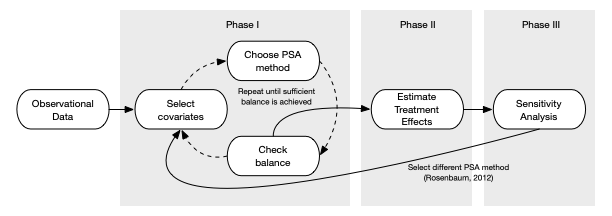- Phase 1
- Select covariates
- Typically whatever variables are available if it’s a secondhand dataset
- If running and experiment, collect data that will demonstrate baseline equivalence (?), which can later be used in a PSA
- Choose PSA method
- Check Balance (i.e. do observations in treatment and control look equivalent)
- Repeat if necessary until sufficient balance is achieved
- Select covariates
- Phase 2
- Estimate Treatment Effects
- Phase 3
- Sensitivity Analysis
- Test how sensitive the results are to an unobserved confounder
- i.e. How much variance would a variable need to have before it changes the results (sign change or just significance?)
- Test how sensitive the results are to an unobserved confounder
- Go back to Phase I and choose a different method
- Tests how sensitive the results are to the PSA method chosen
- Sensitivity Analysis
- Phase 1
Methods:
Stratification - Treatment and Comparison (aka Control) units are divided into strata (or subclasses) based upon a propensity score (e.g. quantiles), so that treated and comparison units are similar within each strata.
- Logistic Regression (treatment/control ~ covariates) can be used to estimate scores (i.e. predicted logits)
lr.out <- glm( treatment ~ x1 + x2 + x3, data = dat, family = binomial(link = logit) ) dat$ps <- fitted(lr.out)5 stratum removes > 90% of the bias in estimated treatment effect (Cochran 1968)
breaks5 <- psa::get_strata_breaks(dat$ps) dat$strata5 <- cut( x = dat$ps, breaks = breaks5$breaks, include.lowest = TRUE, labels = breaks5$labels$strata )With Regression, each strata has very similar numbers of observations.
Trees, strata are determined by the leaf nodes and each strata generally differs in the numbers of observations.
- In a decision tree example, strata had some funky proportions in relation to the categorical and continuous predictors (see Paper)
Within each stratum, independent sample t-tests are conducted and then pooled to provide an overall estimate
Matching - Each treatment unit is paired with a comparison unit base upon the pre-treatment covariates
Algorithms
- Propensity Score Matching
- Limited Exact Matching
- Full Matching
- Nearest Neighbor Matching
- Optimal/Generic Matching
- Mahalanobis distance matching (quantitative covariates only)
- Matching with and without replacement
- One-to-One or One-to-Many Matching
Choice of algorithm is trial and error — whichever one gives the best balance.
Dependent sample tests (e.g. repeated mearsures, t-test w/paired = TRUE) are conducted using the match pairs.
Example:
data(lalonde, package = "Matching") rr <- Matching::Match( Y = lalonde$re78, Tr = lalonde$treat, X = lalonde$ps, M = 1, estimand = 'ATT', ties = FALSE) summary(rr) #> #> Estimate... 2579.8 #> SE......... 637.69 #> T-stat..... 4.0456 #> p.val...... 5.2189e-05 #? #> Original number of observations.............. 445 #> Original number of treated obs............... 185 #> Matched number of observations............... 185 #> Matched number of observations (unweighted). 185- X: Variables to match on or PS
- M: how many matches per unit that you want where 1 is a 1:1 match between treatment and control
- For imbalanced data, you’d want set to something higher depending on the level of imbalance between treatment and control groups.
- For values greater than 1, units get used more than once which may not be accepted in some fields.
- ties: For units that have multiple matches, TRUE means that the matched dataset will include the multiple control group matches with weights that reflect it (see docs for more details). FALSE means one of the multiple matches is chosen at random.
- estimand: ATE and ATC also available; Value printed in the results as Estimate.
Dependent Sample Assessment Plot
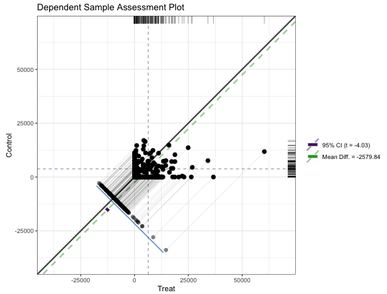matches <- data.frame(Treat = lalonde[rr$index.treated,'re78'], Control = lalonde[rr$index.control,'re78']) granovagg::granovagg.ds( matches[,c('Control','Treat')], xlab = 'Treat', ylab = 'Control')- {granovagg} is a ggplot extension of {granova}. The package has been archived on CRAN and the github has broken links and no documentation.
- Very similar characteristics and interpretation as the Propensity Score Assessment Plot except instead of the circles which represented strata, each dot represents a matched pair between treatment and control. (Also a different color scheme)
- The purple CI bar is difficult to spot since it’s very short, but it stradles the green dashed ATE line and doesn’t include the diagonal (i.e. zero).
Balance Assessment
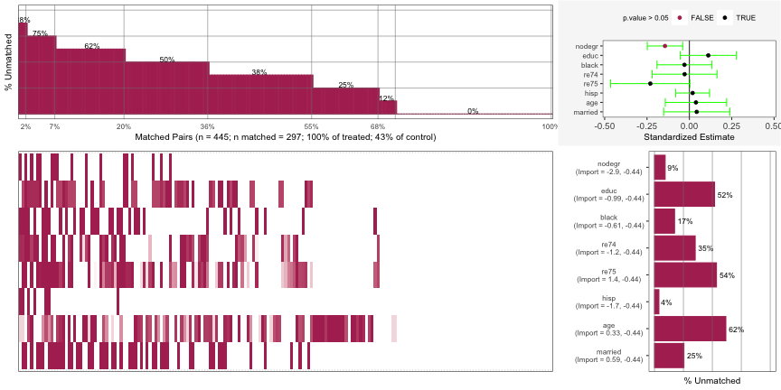lalonde_formu <- treat ~ age + I(age^2) + educ + I(educ^2) + black + hisp + married + nodegr + re74 + I(re74^2) + re75 + I(re75^2) psa::MatchBalance(df = lalonde, formu = lalonde_formu, formu.Y = update.formula(lalonde_formu, re78 ~ .), M = 1, estimand = 'ATT', ties = FALSE) |> plot()Currently this package doesn’t have a website or CRAN docs. See
Matching::Matchabove for details on some of these arguments or see the R script or?psa::MatchBalanceif you have it installed.Charts
Top Left: For 2% of the matched pairs, they only matched on 12% of the covariates.
- The percent annotation was cut-off on his chart but it very likely says 88%. Since the y-axis in “% unmatched”, the percent matched is 12%.
Bottom-Left: A breakdown of the unmatched covariates for each individual matched pair. Each column is a matched pair. Each colored segment in that column represents unmatched covariate. Each row is a covariate which is labelled in the bar graph at the bottom-right.
- The first matched pair was unmatched on the covariates: nodegr, black, re74, and hisp
- Some of the segments have a light coloring instead of dark and I’m not sure what that means.
Bottom-Right: The aggregated unmatched percentage for each covariate across all matched pairs
Top-Right: Standardized Estimate for each covariate. A variable that’s CI doesn’t include 0 indicates an imbalance. (e.g. nodegr)
- Estimate is the mean difference from a paired t-test function that’s been standardized by dividing the estimate by the sd of the variable over the whole sample (i.e. treatment and control groups).
- Using paired because the units have been matched.
- So if the data has been perfectly matched for a variable, the mean difference between the treatment units and control units should be 0.
- A CI of this estimate that includes 0 means that the variable is balanced.
You can apply Partial Exact Matching to try bring any imbalanced variables into balance. This method allows you to be able to specify variables that want to guarantee that units to be matched upon. Doing this affects the matching upon other variables though. So, a variable that was matched before might not still be matched after using this method.
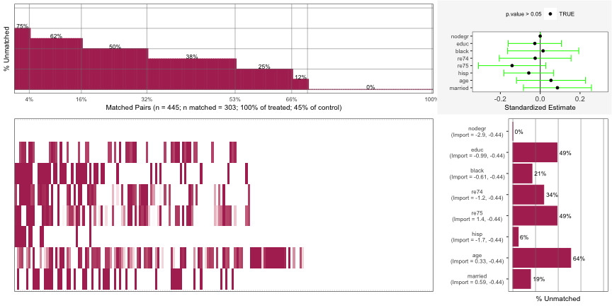psa::MatchBalance(df = lalonde, formu = lalonde_formu, formu.Y = update.formula(lalonde_formu, re78 ~ .), M = 1, estimand = 'ATT', ties = FALSE, exact.covs = c('nodegr')) |> plot()You can see nodegr has been fixed in the Top-Right error-bar chart. It also appears this has brought re75 into balance as well while not throwing the rest of the variables out of balance.
The x-axis range has narrowed which gives the appearance that the error bars have widened, but I don’t think they have.
Weighting - Each observation is weighted by the inverse of probability of being in that group
Propensity Scores are used as weights for the regression model that you’ll use to perform your analysis.
- The specific weights will depend on the estimand (e.g ATE, ATT, etc.)
Average Treatment Effect (ATE): \(\text{ATE} = E(Y_1 - Y_0|X) = E(Y_1|X) - E(Y_0|X)\)
Weight: \(w_{\text{ATE}} = \frac{Z_i}{\pi_i} + \frac{1-Z_i}{1-\pi_i}\)
\(Z_i = 1\) says the unit is in the treatment group
\(\pi_i\) is the propensity score for unit i
Example:
dat <- dat |> mutate( ate_weights = psa::calculate_ps_weights(treatment, ps, estimand = "ATE")) # via {psa} psa::treatment_effect( treatment = dat$treatment, outcome = dat$outcome, weights = dat$ate_weights ) # via lm lm(outcome ~ treatment, data = dat, weights = dat$ate_weights)
ATE Among the Treated (ATT): \(\text{ATT} = E(Y_1 - Y_0|X,C = 1) = E(Y_1|X,C = 1) - E(Y_)|X,C = 1)\)
Weight: \(w_{\text{ATT}} = \frac{\pi_i Z_i}{\pi_i} + \frac{\pi_i(1-Z_i)}{1-\pi_i}\)
Example:
dat <- dat |> mutate( att_weights = psa::calculate_ps_weights(treatment, ps, estimand = "ATT")) # via {psa} psa::treatment_effect( treatment = dat$treatment, outcome = dat$outcome, weights = dat$att_weights ) # via lm lm(outcome ~ treatment, data = dat, weights = dat$att_weights)
ATE Among the Control (ATC): \(\text{ATC} = E(Y_1- Y_0|X = 0) = E(Y_1|X = 0) - E(Y_0|X = 0)\)
- Weight: \(w_{\text{ATC}} = \frac{(1-\pi_i)Z_i}{\pi_i} + \frac{(1-e_i)(1-Z_i)}{1-\pi_i}\)
- Not certain what \(e_i\) is, but it might be the residual for the unit from the propensity score model.
- Example: Same as above except with ATC weights
ATE Among the Evenly Matched (ATM): \(\text{ATM}_d = E(Y_1 - Y_0|M_d = 1)\)
- Weight: \(w_{\text{ATM}} = \frac{\min\{\pi_i, 1-\pi_i\}}{Z_i \pi_i(1-Z_i)(1-\pi_i)}\)
- Example: Same as above except with ADM weights
Shows mirrored axis histogram with PS on x-axis and count on y-axis; guessing treatment/control are top/bottom histograms?
Treament Effect for Weighting
\[ \text{TE} = \frac{\sum Y_iZ_i}{\sum Z_i w_i} - \frac{Y_i(1-Z_i)w_i}{\sum(1-Z_i)w_i} \]
- This formula is an alternative to using the weights in a model to estimate the effect.
Visualization
Distribution of propensity scores
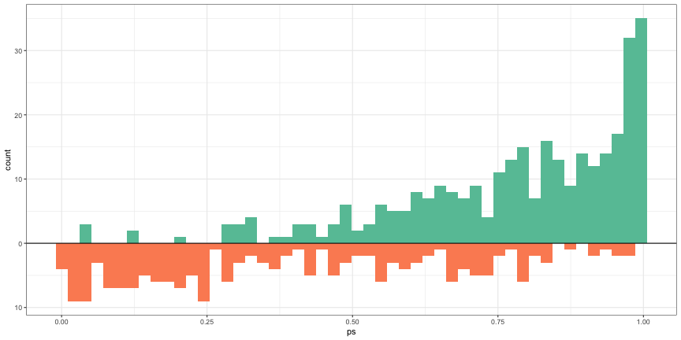ggplot(dat) + geom_histogram( data = dat[dat$treatment == 1, ], aes(x = ps, y = after_stat(count)), bins = 50, fill = cols[2] ) + geom_histogram( data = dat[dat$treatment == 0, ], aes(x = ps, y = -after_stat(count)), bins = 50, fill = cols[3] ) + geom_hline( yintercept = 0, lwd = 0.5 ) + scale_y_continuous(lable = abs)- Treatment above and Control below
- Treatment is skewed negative and Control is skewed positive which makes sense, because as the propensity scores get larger (i.e. the probability of being in the treatment increases), we should see the number of treatment observations increase while the number of control observations decrease.
Covariate Balance Plot
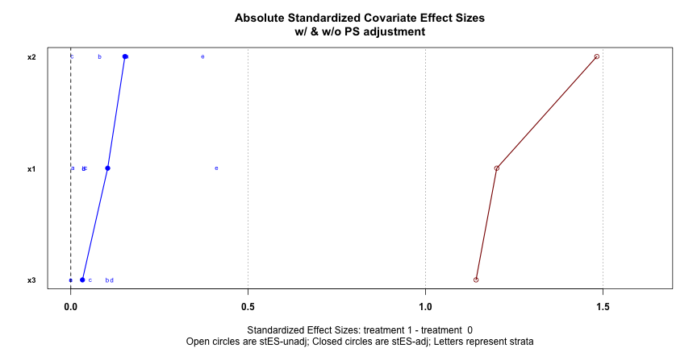PSAgraphics::cv.bal.psa( dat[, 1:3], data$treatment, dat$ps, strata = 5 )Absolute standardized Covariate effect sizes with (blue) and without (red) PS adjustment
Want blue dots close to zero (0.1 is recommended) which says that after PS adjustment, the covariates have little predictive power in determining whether a unit is in the treatment group or control group. It means the PS are effectively adjusting for the selection bias of the treatment/control “assignment” in the observational data.
Boxplot by Propensity Score Strata by Treatment
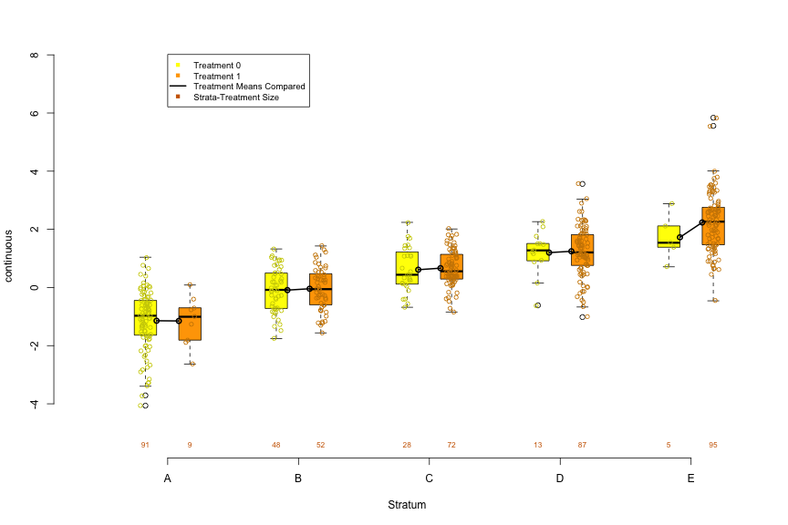PSAgraphics::box.psa( continuous = dat$x2, treatment = dat$treatment, strata = dat$strata5 )For a continuous predictor, it allows you to visually examine the balance produced by the PS strata by comparing the distributions between treatment and control within each strata
Connected dots are the means within each distribution and numbers below each box are its sample size.
- Setting trim = 0.5 will connect medians. (Range of trim is from 0 to 0.5)
Within strata, the more similar the distributions between treatment and control, the better the balance. Balance should be assessed for each predictor.
Trends or patterns between strata can hint at potential variation and may help explain effects detected in the later performed analysis
- Units in higher strata (i.e. higher PS) are more likely to be treated than those in lower strata, so looking at the values of predictor, you can say whether those with higher or lower values of the predictor are more likely to be treated.
With balance = TRUE (default is FALSE),
- Histogram
- Permuted data are randomly assigned to strata, absolute differences of means calculated within each strata, and the differences summed to produce the statistic.
- Repeated until there’s a distribution which is then visualized as a histogram
- The sum of the mean differences of the original data is represented by a red dot.
- The further left the red dot is from the mean (or median with trim = 0.5) of the permuation distribution, the better the balance
- i.e. the smaller the sum of mean differences of the original data as compared the permuted distribution of sums of mean differences, the better.
- The rank shows where the original data statistic ranks in comparison to all of the summed differences in the permuted distribution.
- Total_number_of_ranks = number_of_permutations + 1 (aka original data)
- Boxplot
- P-Values for KS-tests on treatment and control distributions are placed above the sample sizes of each strata. A lack of balance for a given strata would be indicated by a p-value < 0.05.
- Histogram
Stacked Bar Chart by Propensity Score Strata by Treatment
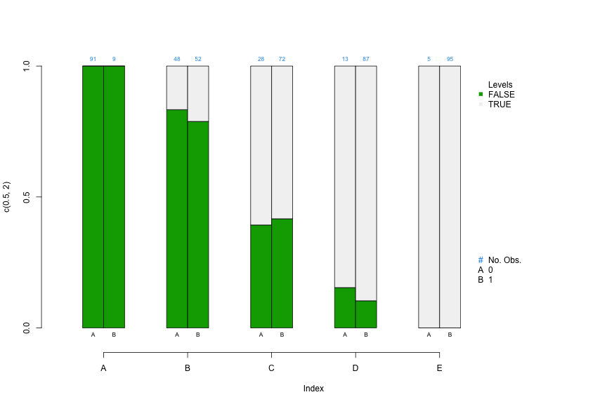PSAgraphics::cat.psa( categorical = dat$x3, treatment = dat$treatment, strata = dat$strat5 )- For a categorical predictor, it allows you to visually examine the balance produced by the PS strata by comparing the category proportions between treatment and control within each strata
- Within each strata, side-by-side segmented bars can be used to compare proportions of cases in each category
- Sample sizes are above each bar
- if subsequent analysis indicates large differences in size or direction of effects for different strata, then comparing covariate distributions across strata may give an initial indication of potential causes.
- With balance = TRUE (default is FALSE), it’s very similar to
box.psa.- Histogram
- Units within each category are permuted between strata
- Differences in proportions is used instead of difference in means
- Interpretation is the same
- Fisher’s Exact Tests are performed and the p-values are shown at the bottom of the bars for each strata. A lack of balance for a given strata would be indicated by a p-value < 0.05.
- Histogram
Propensity Score Assessment Plot
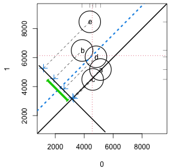strata5 <- cut(lalonde$ps, quantile(lalonde$ps, seq(0, 1, 1/5)), include.lowest = TRUE, labels = letters[1:5]) circ.psa(lalonde$re78, lalonde$treat, strata5)- When differences in outcomes between treatments vary across strata, the investigator may want to learn how these differences are related to changes in covariate distributions within the strata.
- Displays contributions of individual strata to the overall effect, weighing contributions of individual strata according to the relative sizes of the respective strata. The overall effect is plotted as a heavy dashed diagonal line that runs parallel to the identity diagonal.
- The x-axis is the response values when treatment = 0, and the y-axis is the response values when treatment = 1. Labels depend on the values of the treatment variable.
- Circles
- Each circle represents a stratum, and the sizes of circles vary according to their respective sample sizes.
- The center of each stratum’s circle corresponds to outcome means for the respective control and treatment groups for that stratum.
- The Crosses represent the difference in response means between treatment and control.
- The blue dashed line is the mean of the differences between the strata which is the ATE, and the green line is its 95%CI.
- CIs that span the diagonal means no significant effect.
- CIs become increasingly unreliable for larger values of the trim arg.
- The vertical and horizontal dashed red lines represent the (weighted) response means for the control and treatment groups respectively.
- Interpretation
- Circles/Crosses that fall on the diagonal means that those strata do not have a treatment effect.
- Circles on the lower side of diagonal black line show that the corresponding x-axis (e.g. treatment = 0) mean for that strata is larger than the y-axis (e.g. treatment = 1) mean for that stratum
- Circles close proximity to one another on the same side of the diagonal indicates concordance of outcome values in these strata
- Circles far outside of the cluster of circles should be investigated via the other predictor charts above to see what characteristics make-up that particular strata. If the sizes of each strata aren’t relatively balanced, then a strata with few units may present outside the cluster. It may be useful try a larger amount of strata to see how that affects the outlier circle as it may help narrow the strata profile.
- The distance of the crosses from the diagonal represents the size of estimated effect. A stratum with a much larger effect would influence the ATE (blue line) more strongly.
LOESS Plot
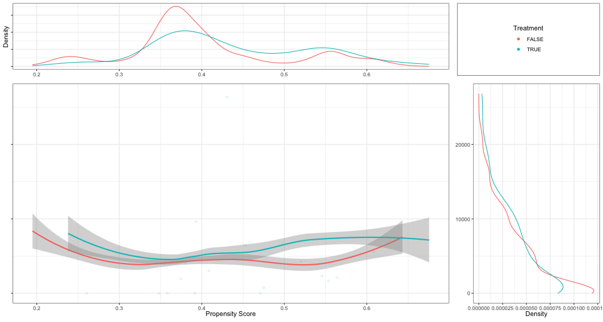psa::loess_plot( ps = psadf[psadf$Y < 30000,]$ps, outcome = psadf[psadf$Y < 30000,]$Y, treatment = as.logical(psadf[psadf$Y < 30000,]$Tr))- Includes:
- Top: PS density plots for treatment and control. Looking to make sure there’s substantial overlap of the two densities.
- Right: Density plot of the outcome variable by treatment variable. Example shows significant skew and should be logged.
- Center: LOESS plot
- Parallel lines would indicate that there is a treatment effect, and it is homogeneous (i.e. same for all units) across all propensity scores which is not often the case.
- An important feature of PSA in detecting heterogeneous, or uneven, treatments based upon different “profiles.”
- I think a profile would be kind of like a latent variable description of a cluster, but in this case, clusters are strata determined by the propensity scores. Profiles can be built by looking at the predictor vs propensity score strata charts above.
- An important feature of PSA in detecting heterogeneous, or uneven, treatments based upon different “profiles.”
- Can be used to find strata boundarys. Potential boundaries are indicated where the treatment and control lines narrow or cross. Spaces between the lines are where you can expect a treatment effect.
- e.g. Setting
int = c(0.375, 0.55, 0.875, 1)says that 0.357 and 1 are the minimum and maximum propensity scores and 0.55 and 0.875 are scores where the loess lines narrow or cross. This would represent 3 strata: (0.375, 0.55], (0.55, 0.875], and (0.875, 1]. - Seems like this would be highly dependent on the parameters of the LOESS parameters that are set unless you have a lot of data.
- e.g. Setting
- Includes:
Stratification Plot
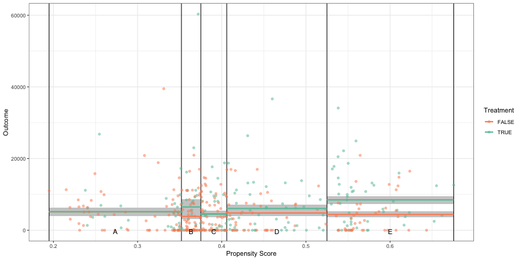psa::stratification_plot(ps = psadf$ps, treatment = psadf$Tr, outcome = psadf$Y, n_strata = 5)- Instead of assuming a continuous vector of propensity scores as with the LOESS, it visualizes the mean differences in the response variable for each strata
- Essentially a visualization of an independent t-test.
{kind=link}
{kind=link}
{kind=link}
{kind=link}
{kind=link}
{kind=link}
{kind=link}
{kind=link}
{kind=link}
{kind=link}
Sensitivity Analysis
Observe how the treatment effect size changes in the presence of unobserved confounders.
- If the observational analysis results only depends on the observed covariates which is unlikely, then the analysis is free of hidden bias (i.e. the p-value is valid if there are no unobserved confounders)
Hidden bias exists if two units with the same covariate values have different propensity scores.
Technique currently only available for the Matching PSA method
- Not sure why this is only for Matching since the formula below is just an odds ratio of propensity scores. Maybe he’s talking about the package used in his example.
Selection Bias Ratio
\[ \Gamma = \frac{O_a}{O_b} = \frac{\frac{\pi_a}{1-\pi_a}}{\frac{\pi_b}{1-\pi_b}} \]
- The ratio of the odds of the treated unit being in the treated group to the odds of the control unit being in the control group
- Converting Gamma to probability
- Examples
- In smoking studies, the ratio is around 6 which means the results are very robust to unobserved confounders. Anything around 1 is considered sensitive to confounders.
- For Social Science studies, it’s typically between 1 and 2.
- Converting to the probability of 1 unit of the matched pair being treated
\[ \frac{1}{\Gamma + 1} \leq p_a, p_b \leq \frac{\Gamma}{\Gamma + 1} \]- \(p_a\) is the probability of a unit in group \(a\) being treated.
- \(\Gamma = 1 \quad \longrightarrow \quad p_a =0.5 \;\&\; p_b = 0.5\) which means each unit is equally likely to get treated
- \(0.5 \leq \Gamma \leq 2 \quad \longrightarrow \quad 0.33 \leq p_a, p_b \leq 0.66\) which means no unit can be more than twice as likely as its match to get treated
- \(0.33 \leq \Gamma \leq 3 \quad \longrightarrow \quad 0.25 \leq p_a,p_b \leq 0.75\) which means no unit can be more than three times as likely as its match to get treated.
Wilcoxon Signed Rank Test
Used in the sensitivity test to determine which level of \(\Gamma\) will produce a non-significant treatment effect.
Steps
Drop matched pairs that have the same outcome value
Calculate the difference in outcome value between each matched pair
Rank the absolute differences from smallest (1) to largest (N)
Calculate W
\[ W = \left|\; \sum_1^N \operatorname{sgn} (x_{T,i} - x_{C,i}) \cdot R_i \; \right| \]\(N\) is the number of ranked pairs
\(R_i\) is the Rank for pair \(i\)
\(x_{T,i}\) and \(x_{C,i}\) are the outcome values for each unit of pair \(i\)
Example:
rbounds::psens(x = lalonde$re78[rr$index.treated], y = lalonde$re78[rr$index.control], Gamma = 2, GammaInc = 0.1) #> #> Rosenbaum Sensitivity Test for Wilcoxon Signed Rank P-Value #> #> Unconfounded estimate .... 2e-04 #> #> Gamma Lower bound Upper bound #> 1.0 2e-04 0.0002 #> 1.1 0e+00 0.0016 #> 1.2 0e+00 0.0069 #> 1.3 0e+00 0.0215 #> 1.4 0e+00 0.0527{rbounds} performs Rosenbaum Bounds Sensitivity Tests for Matched and Unmatched Data. Also has functions for IV models and 2x2 contingency tables.
- There is another function for continuous/ordinal outcomes called
hlsenswhich uses the Hodges-Lehman point estimate. After reading the wiki, the output of this function seems to be a median difference or effect size for a given Gamma, but I’m not sure how that’s supposed to be interpreted in this context. - For binary outcomes, use
binarysens. The x and y args say to use counts of discrepant pairs. This means counts where the treatment group and control groups have different outcomes. So in the 2x2 table, that’s the counts in cells (1,2) and (2,1)- Bryer’s slides say to use McNemar’s test, but after looking at the code, I don’t see how Gamma can be incorporated into that test.
- There is another function for continuous/ordinal outcomes called
Arguments
- x: Treatment group outcome values ordered by matched pairs
- y: Control group outcome values ordered by matched pairs
- Gamma: Largest value of Gamma that you want to test
- GammaInc: Increment value of Gamma.
The Lower bound and Upper bound are a sort of CI for the Wilcoxon test’s p-values
Look for the value of Gamma that would nullify a significant treatment effect in your analysis.
- e.g. \(\Gamma = 1.4\) (since it’s Upper bound value is > 0.05) says that a confounder that adds 40% more variance in explaining the outcome would result in a Wilcoxon Test that doesn’t reject the Null Hypothesis (i.e. no significant treatment effect).
Bootstrapping
With bootstrapping, you can check the sensitivity to model choice.
Sampling with replacement is done for the treatment and control observations is done separately
For each bootstrap sample balance statistics and treatment effects are estimated using each method (five by default). Overall treatment effect with confidence interval is estimated from the bootstrap samples
Example
lalonde_formu <- treat ~ age + I(age^2) + educ + I(educ^2) + black + hisp + married + nodegr + re74 + I(re74^2) + re75 + I(re75^2) psaboot <- PSAboot::PSAboot(Tr = lalonde$treat, Y = lalonde$re78, X = lalonde, formu = lalonde_formu) summary(psaboot) #> Stratification Results: #> Complete estimate = 1658 #> Complete CI = [242, 3074] #> Bootstrap pooled estimate = 1476 #> Bootstrap weighted pooled estimate = 1461 #> Bootstrap pooled CI = [66.5, 2885] #> 59% of bootstrap samples have confidence intervals that do not span zero. #> 59% positive. #> 0% negative. #> ctree Results: #> Complete estimate = 1598 #> Complete CI = [-6.62, 3203] #> Bootstrap pooled estimate = 1465 #> Bootstrap weighted pooled estimate = 1472 #> Bootstrap pooled CI = [172, 2758] #> 38.1% of bootstrap samples have confidence intervals that do not span zero. #> 38.1% positive. #> 0% negative. #... etc for the other methods- By default,
PSAbootuses logistic regression (i.e.boot.strata) {partykit::ctree} (See Algorithms, ML >> Trees >> Distributional Trees/Forests), {rpart} (decision trees), {Matching}, and {MatchIt}, butboot.weightingis also available by manually specifying the functions through the methods argument. - control.ratio and treat.ratio arguments allow for undersampling in the case of imbalanced data
- Default parallel = TRUE, M = 100. Also has a seed argument. Watch your RAM for large values of M, because I don’t think there’s any garbage collection in his code.
- By default,
Balance Plot
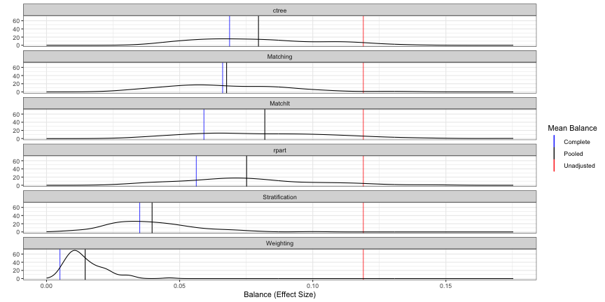- Metric: Average Balance (mean difference/sd(strata) for strata or sd(N) for matching) across all covariates
- Unadjusted (red): No propensity score adjustment
- Complete (blue): Propensity scores used but no bootstrapping
- Pooled (black): Propensity scores and bootstrapped
- So the distribution is made-up “blue” measurements calculated from bootstrap resamples. Then, the black line is the mean of that distribution
- The red and blue estimates seem to the same as the ones in the Covariate Balance Plot (
PSAgraphics::cv.bal.psa) - Interpretation: The weighting method is the most balanced.
Box Plot
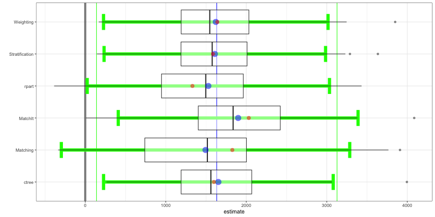PSAboot::boxplot(psaboot)From the Bryer video, I assume this is a boxplot version of the balance plot with the same interpretation of each color (black, red, and blue) except that since the input isn’t a balance object, these are unstandardized mean differences? (note x-axis).
- I’m confused as to why Weighting is no longer the best method (i.e. closest to zero) though.
There currently isn’t any sufficient documentation to make certain of estimate or the green lines, but I think the green lines look like averages of the whiskers.
Correlation Between Boot Distributions
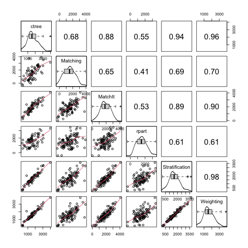PSAboot::matrixplot(psaboot)- {rpart} shows the least relationship with the other methods.
{kind=link}
{kind=link}
{kind=link}
Multinomial
- Example: 2 Treatments and 1 Control
- Estimate three separate propensity score models for each pair of groups (i.e. Control-to-Treat1, Control-to-Treat2, Treat1-to-Treat2).
- Determine the matching order. The default is to start with the treatment with the smallest number of observations, then the other treatment, followed by the control which typically has the most observations.
- For each unit in the first group (e.g. Treatment 1), find all units from the second group (e.g. Treatment 2) that have PSs within a certain threshold (i.e. difference between PSs is within a specified caliper).
- For each unit in the second group, find all units from third group (e.g. Control) within a certain threshold.
- Calculate the distance (i.e. difference) between each unit in the third group matched in the previous step and the unit from the first group. Eliminate candidates that exceed the caliper (i.e. threshold).
- Calculate a total distance (sum of the three distances) and retain the smallest unique M group 1 units (by default M=2)
- PS estimated from multiple logistic regression models. One for each combination of of categories of the treatment variable (e.g. treatment_1 ~ control, treatment_2 ~ control, treatment_1 ~ treatment_2)
- Finds matched triplets that minimize the total distance (i.e. sum of the standardized distance between propensity scores within the three models). within a caliper.
- Provides multiple methods for determining which matched triplets are retained:
- Optimal: which attempts to retain all treatment units.
- Full: which retains all matched triplets within the specified caliper (.25 by default as suggested by Rosenbaum).
- Analog of the one-to-many for matched triplets. Specify how many times each treat1 and treat2 unit can be matched.
- Unique which allows each unit to be matched once, and only once.
- Functions for conducting repeated measures ANOVA and Freidman Ranksum Tests are provided.